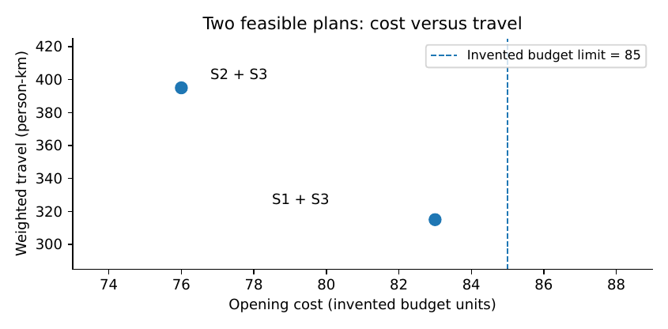

From Problems to Working Solutions: An Integrated Field Handbook
This final chapter is a working journey, not a summary of twelve topics. We begin with a community service problem and carry one transparent set of assumptions through problem definition, data checking, mathematics, prediction, optimisation, software, testing, evaluation and handover. The reader finishes with a completed illustrative solution dossier and an exact template for developing a real one.
A question that deserves an answer
Four settlements report difficult access to safe water. A local authority has a limited investment budget and can operate no more than two new distribution points. Some households are distant from the nearest existing source; others live close to an unreliable one. A sponsor proposes a mobile application that predicts where water will be needed. Yet the first decision may be more basic: which new points, if any, should be built, and how will we know they improve access?
We do not begin by developing the mobile application. We begin by visiting the service process conceptually: where does water come from, how is it stored, how do people reach it, who has the right to make siting decisions, and which records describe demand? Chapter Chapter 1 taught this discipline. The people who collect water may care about distance, cost, queuing, safety and hours of availability, while administrators also face capital budgets, land permissions and maintenance liabilities. The mathematical model should make these differences visible.
The complete case in this chapter is a teaching example with invented numbers. It is not a report about actual settlements or measured improvements. All quantities that would require field measurement are marked as assumptions. That convention is part of the work, not an apology for it.
Stage 1: write the problem definition record
A compact problem definition includes the decision owner, affected population, alternatives, outcome, feasibility conditions and risks. For the invented water-service case, the decision maker is the local authority, the primary decision is a set of distribution points, and the primary planning outcomes are accessibility and capital expense. Whether the built points deliver safe water reliably is a separate operational outcome that requires real monitoring.
| Field | Defined for this teaching case |
|---|---|
| Population | Four invented settlement groups A–D |
| Decision | Select at most two candidate water points and allocate planned demand |
| Primary planning criterion | Minimise total weighted travel distance for demand served |
| Capital constraint | Maximum 85 budget units (invented, no currency conversion) |
| Other constraints | Installed site capacities, at most two facilities, full planned coverage |
| Affected groups | Residents, maintenance workers, users requiring accessible routes |
| Evidence status | All numerical inputs invented; feasibility is mathematical only |
| Field evidence still required | Survey demand, walkable routes, source yield, water quality, land rights, financing |
This record prevents the problem from changing unnoticed during model development. In a real study the stakeholders may discover that meeting a maximum travel-time standard matters more than minimising average travel distance. That is not a nuisance to suppress: it is a reason to revise the objective and document who authorised the change.
Stage 2: understand the system and audit the observations
A facility may serve water continuously or only at particular hours. Demand may mean population count, litres per day or observed visits, and these are not equivalent. Chapter Chapter 2 introduced dimensional reasoning: a daily water volume cannot be substituted for a head count in a capacity constraint without an explicit conversion. In this case our simplified demand unit is one planning service unit per represented resident, and capacities are measured in the same planning units. No claim about litres or hydraulic delivery follows without a corresponding physical model.
A field dataset should record the population denominator, observation date, season, source, units, missing values, coordinate accuracy, road conditions and consent or governance requirements. To avoid misleading travel distances, compare mapped travel paths with field observations, especially where rivers, slopes or seasonal routes matter. If population figures come from a gridded model rather than a census count, note the modelling and uncertainty. For service siting, uncertainty concentrated in remote settlements may change the decision even when the total population estimate is accurate.
Stage 3: formulate the mathematical choice
Let index settlement groups, candidate sites, planned service demand, the opening cost, the site capacity, and the travel distance for settlement to site . Introduce for opening a site and for the amount of settlement ’s demand allocated to site . A basic capacitated facility-location model is
(12.1)
The first constraint serves all assumed demand; the second forbids sending demand to closed sites and limits capacity. The cost and site-count constraints express explicit institutional limits. Fractional allocations are interpreted as dividing aggregate demand across sites; if each settlement must be assigned to exactly one site, the model needs binary assignment variables instead. Chapter Chapter 5 supplies the wider optimisation background (Hillier and Lieberman 2021; Boyd and Vandenberghe 2004).
The objective is total person-distance under the teaching convention. Minimising it is not equivalent to minimising maximum distance, nor to guaranteeing water quality. When fairness requires a maximum acceptable distance , a route whose must be forbidden for relevant users, or the constraint must be formulated at an appropriate individual level. A policy decision is hidden whenever an analyst describes average distance as if it were every household’s experience.
Stage 4: put all illustrative assumptions on one page
| Settlement | Assumed demand | Distance to S1 | Distance to S2 | Distance to S3 |
|---|---|---|---|---|
| A | 30 | 2 | 6 | 12 |
| B | 25 | 3 | 3 | 10 |
| C | 20 | 11 | 2 | 4 |
| D | 15 | 12 | 6 | 2 |
| Candidate capacity | 45 | 50 | 55 | |
| Candidate opening cost | 48 | 41 | 35 |
The overall assumed demand is service units. No single site’s capacity covers it. Opening S1 and S2 costs units, above the budget . The remaining two-site combinations, S1+S3 at cost and S2+S3 at cost , have enough total capacity. These facts can be verified before using a solver; such simple checks catch mistakes in code and assumptions.
One explicitly feasible allocation
For S1+S3, allocate 30 units from A and 15 from B to S1, and the remaining 10 from B plus all of C and D to S3. Its site loads are 45 and 45, and weighted travel is
This is a feasible plan, not automatically the global optimum; a correct algorithm must check all feasible allocations. In this two-site case we can verify its optimality by examining the difference in cost between routing each settlement to S1 and S3: A saves 10 per unit at S1, B saves 7, while C and D are cheaper at S3. Since S1 has capacity 45, we first send all A’s 30 units and the next 15 units of B to S1. That exactly gives the plan above. For S2+S3, the same savings argument must be repeated under S2’s capacity.
Proposition. Suppose exactly two sites are open, demand can be split continuously, their combined capacity covers total demand, and every unit must be served. Define savings from assigning settlement to site rather than . Any feasible optimum can be found by allocating site ’s available capacity to the largest positive savings first, while respecting the minimum total allocation to imposed by site ’s capacity.
Proof. Begin with all units provisionally assigned to . Moving units of group to changes cost by . The problem is to maximise subject to , and . For two groups with , if and , shifting a feasible small amount from to increases the objective by . Repeating exchanges sorts assignments by decreasing savings; the total allocation is chosen to satisfy the stated bounds. This proves the greedy characterisation for this divisible, two-site special case. ◻
The proposition is not valid for arbitrary nondivisible household assignments or general multi-site integer optimisation. the companion program enumerates feasible opening pairs and optimises the continuous two-site allocations in this small example. It also asserts conservation, budgets and capacities as automatic tests.
Stage 5: make competing objectives visible
A plan that minimises person-distance may still leave an unacceptable burden on some individuals. Record not just the mean but the maximum assigned route, weighted share above a chosen limit and the worst-served subgroup. Here the decision maker could impose for every route that carries positive demand. The proposed S1+S3 allocation meets that threshold only at the limit for B’s diverted demand. A stricter maximum may render both currently affordable pairs infeasible under the assumed capacities; the correct output is then infeasible, accompanied by an explanation, rather than a fabricated compromise.
One can formulate a two-objective problem: minimise , with capital opening cost and travel burden , under specified service constraints. A Pareto-efficient solution has no alternative that is at least as good in both criteria and strictly better in one. The pair of affordable opening options illustrates why the authority should inspect both costs and accessibility rather than hide the choice behind a single arbitrary weighted sum. If a weighting is used, it must express a decision-maker preference in consistent units.

Stage 6: prediction only when it changes the decision
We have treated demand as known. Real demand varies by season, opening hours, population movement and source reliability. To forecast the next period, start with a transparent baseline such as a rolling mean, then compare against more complex models using an appropriate temporal and spatial hold-out. A prediction method earns its place only if it improves the quality of a decision enough to justify the extra data and maintenance requirements (Hyndman and Athanasopoulos 2021; Roberts 2017).
Let denote uncertain future demand. A simple robust version of equation (12.1) may require enough capacity for all in a declared uncertainty set . The larger the set, the more expensive the required plan may become. A stochastic version instead evaluates expected cost under a fitted and validated distribution. Neither is better by definition. Use the approach whose assumptions and consequences are defensible (Ben-Tal, El Ghaoui, and Nemirovski 2009; Bertsimas and Sim 2004).
Example. Suppose future demand at settlement A could rise from 30 to 40 service units without a change elsewhere. S1’s capacity is already fully allocated in the illustrated S1+S3 plan, but S3 has 10 spare units. The extra A demand could be routed to S3 only at a long assumed travel distance. A model that reports merely “capacity sufficient” ignores the access consequence. If service to A at that distance is unacceptable, additional capacity or a revised location choice is required.
This is why sensitivity analysis belongs inside a planning decision. The purpose is not to produce dozens of plots but to determine which uncertain inputs could reverse the chosen action.
Stage 7: build only the application that is needed
For this project, a small offline tool could store settlement definitions, verified site capacities, approved cost estimates, planned demand, route measurements and each version of the allocation decision. A spreadsheet with transparent formulas may be sufficient initially. If several field officers must collect data independently, an offline-first application with unique record identifiers and transactional reconciliation may be justified, using Chapter Chapter 7’s engineering principles (Kleppmann 2017).
The tool should display a rejected recommendation as clearly as an accepted one. For example, “S1+S2 rejected: capital cost 89 exceeds limit 85” is more useful than an empty output. It should also report the date and source of demand assumptions and distinguish verified data from illustrative placeholders. The software must not silently substitute a default zero when a village’s demand estimate is missing.
Stage 8: verification is a sequence of tests
The book’s companion capstone script checks these properties, which should later become automated tests for any operational implementation:
Arithmetic. Total allocated demand equals total declared demand, within numerical tolerance.
Capacity. No site serves more than its declared capacity, and closed sites serve zero.
Budget. Opening cost respects the approved limit.
Units. Inputs and outputs are labelled consistently; costs and travel burdens are not added as if they have the same units.
Monotonicity check. Removing budget or capacity cannot enlarge the mathematical feasible set.
Failure behaviour. Missing data, impossible budgets and negative capacities raise explicit errors rather than plausible numbers.
Reproduction. A second reader obtains the same decision table with the same input and code version.
Proposition. For a fixed optimisation model, if the only change is to reduce available budget from to with , then . Likewise, decreasing a capacity upper bound while fixing all other assumptions cannot add a feasible allocation.
Proof. Every solution satisfying also satisfies . The rest of its constraints are unchanged. The capacity statement follows from the same inclusion argument. ◻
The proposition is elementary but powerful as a software test. If the optimiser reports a new feasible plan only after the budget is reduced, check whether the underlying input, solver tolerance or other constraint changed unnoticed.
Stage 9: from a mathematical plan to a real pilot
The decision to build a distribution point requires more than a feasible allocation. The authority must verify water yield, safety, land agreements, maintenance funding and the actual routes used by residents. A pilot could then compare access, queuing time, service reliability and cost under a defensible evaluation design. If a comparison settlement is used, define why its trend is a credible counterfactual; if sites are randomised, analyse by the assignment unit. Chapter Chapter 9 provides the logic.
A plausible outcome is median minutes spent collecting a specified quantity of water over a defined observation period. Record water quality and availability separately. A shorter walk to an unsafe or frequently dry source is not a successful solution. Report who benefits and who bears extra travel or maintenance work. If only a feasibility plan has been produced, the manuscript should say exactly that.
Stage 10: decide whether the service can survive
The mathematical solution is a recommendation, not an operating institution. Staff must know who cleans, maintains, tests and repairs the water system, who pays, and what happens if a source fails. The service requires budgets and a route for complaints, physical inspections, backup supplies and a clear owner. Chapter Chapter 10 showed how to express those obligations and verify that they exist. Software reports can support the process, but cannot replace the infrastructure or decision authority.
A deployment readiness record therefore includes technical acceptance tests, institutional permissions, funding commitments, procurement rules, training, water-quality monitoring and a stop procedure. The absence of a reliable water-quality monitoring mechanism may be a reason not to commission the service, regardless of predicted travel savings.
Stage 11: what changes in another country?
A version of the project could be developed in any country where service-access problems exist, but the data schema alone is portable. Demand units, route measurements, climate, maintenance capacity, land permissions, tariffs and service rights may differ. An adaptation exercise should redo the problem definition and use documented local data rather than copying our invented example. Chapter Chapter 11 provides the transport and re-optimisation tools. Public WHO/UNICEF WASH estimates can provide contextual information, but they cannot supply missing village-level routes and engineering costs (WHO/UNICEF Joint Monitoring Programme 2026).
Stage 12: the solution dossier
A completed project should leave a structured record that another person can inspect or contest. The Solution Dossier developed through the book contains twelve elements corresponding to the intellectual journey, not a claim to have invented a new scientific method.
| Chapter | Evidence or artefact | Question answered |
|---|---|---|
| 1 | Problem definition record | Whose decision and what consequence? |
| 2 | Mathematical model and assumptions | Which system and units are represented? |
| 3 | Data provenance and quality audit | Can the measurements be trusted? |
| 4 | Prediction validation report | What can be predicted, for whom? |
| 5 | Feasibility and optimisation record | What action fits the constraints? |
| 6 | Model comparison and cost audit | Is AI worth using here? |
| 7 | Software tests and recovery plan | Does the tool work under actual conditions? |
| 8 | Domain safety and service analysis | What consequences matter in practice? |
| 9 | Impact evaluation protocol or evidence | Did the intervention cause an improvement? |
| 10 | Ownership and maintenance plan | Who keeps it operating and funded? |
| 11 | Adaptation record | What must be remeasured elsewhere? |
| 12 | Integrated acceptance and handover | Can another team verify and continue the work? |
The case’s dossier is complete as a teaching prototype: the inputs and objective are explicit, the feasible assignments are checkable, the code reproduces the comparison, the field measurements and validation still needed are named, and no improvement in real access is asserted. A production dossier cannot earn the same acceptance until field evidence and governance records exist.
Three further capstones
A book of methods should not dictate only one field of application. Each proposed project below uses the same reasoning but a different practical domain.
Essential medicines across a district
Define a measurable medicine-availability outcome; audit issue and stock records for censored demand; develop a ledger-conserving inventory model; compare simple and advanced demand forecasts; optimise orders under budgets, delivery time and expiry; implement a transparent offline tool; plan a defensible pilot; document training and maintenance; and assess adaptation to another supply-chain structure. The critical task is distinguishing improved simulation results from observed patient benefit.
School resource allocation
Begin with a specific education decision: how to distribute scarce laboratory equipment or teaching time fairly across schools. Model student counts, class size, distance, timetables and staffing; check whether data correspond to the same school year; optimise allocations while protecting minimum service; develop a small auditable allocation tool; then evaluate whether actual access to lessons improves. The project must account for qualitative classroom constraints rather than infer educational value solely from equipment counts.
Flood-warning decisions
Choose a limited geographic area with available hydrological observations and agreed local warning responsibilities. Compare simple physical or threshold rules against predictive models using time-aware validation. Optimise a warning threshold against missed-event and false-alarm consequences, assess the cost and power needs of communication, test failure procedures, and design a prospective evaluation. Do not claim disaster-risk reduction from a retrospective prediction metric alone. This is a domain in which false confidence is particularly dangerous.
A practical assessment rubric
A capstone should reward disciplined reasoning and responsible evidence, not the use of fashionable algorithms. The following suggested marks total 100 points and can be adapted to course level.
| Criterion | Marks |
|---|---|
| Clear problem and decision ownership; affected population and ethical limits | 10 |
| Model correctness, derivations, units, assumptions and failure cases | 15 |
| Data provenance, quality audit and honest evidence classification | 15 |
| Independent prediction/decision validation and appropriate baselines | 15 |
| Feasibility, resource cost and equity implications | 10 |
| Working, reproducible software with tests and failure handling | 15 |
| Credible impact-evaluation plan or appropriately qualified field evidence | 10 |
| Deployment, maintenance, transfer and quality of communication | 10 |
| Total | 100 |
A project may score highly as a rigorous prototype despite having no measured deployment impact, provided it labels that limitation and provides a credible pathway to a field study. A project presenting invented observations as real data should not receive credit for apparent impact, whatever the sophistication of its model.
Instructor and practitioner guide
For an introductory course, assign Chapters 1–3 to a problem-definition and data-audit exercise, followed by one chosen application from Chapters 4–8. For an advanced undergraduate course, require mathematical justification, computational tests and an explicit baseline comparison. For a master’s or professional training programme, add Chapters 9–11 and require a written evaluation and deployment protocol in collaboration with a domain specialist. All levels can complete a version of the final dossier; expectations differ in the evidence and mathematical depth required.
The companion code is designed for a modest computer and an offline Python environment after installation. It does not require paid cloud services or a GPU. A university may distribute the synthetic fixtures with the exercises, but third-party observed datasets must be obtained and used under their own documented licences and protections. A reproducible result is useful only when another reader can discover what was actually run (Sandve et al. 2013; Oberkampf and Roy 2010).
A second integrated capstone: essential medicine ordering
The water case teaches where infrastructure should be placed. A medicine-ordering project teaches another lesson: even when infrastructure exists, the institution may not observe the quantity it needs to predict. We return to the health-service problem of Chapter Chapter 8 and use it to show how the twelve chapters cooperate rather than simply sit next to one another.
A district clinic reports that a particular medicine is frequently unavailable. Staff propose training a neural network to forecast monthly issues. The project team first asks whether the ledger records actual demand. Suppose dispensing is capped by stock: if 40 patients need the item but only 25 units are available, the ledger records 25 issued units. A forecast fitted only to issues may predict 25 and appear accurate, while the unobserved need remains 40. This is the central measurement problem. The right next step may be a record of unfilled requests, not a neural network.
The problem record
The decision is an order quantity for specified medicines at a stated review time. The primary service aim is to reduce verified stock-out days without violating budget, storage, expiry and clinical safety constraints. The decision owner is the responsible pharmacy or supply-chain team, not an autonomous algorithm. The target population includes people served by the clinic, with attention to vulnerable groups who may face the greatest harm from shortages.
A full problem definition also identifies the existing policy and alternatives. These might include fixed reorder points, order-up-to levels, a simple moving-average forecast and a more complex predictive method. The intervention is not simply the introduction of software; it is a specified change to the ordering practice, training and record review. Its consequences may be affected by supplier delays and procurement cycles outside the facility’s control.
An illustrative stock equation
Let be physical stock immediately before the daily transaction window, receipts, issues, wastage and authorised corrections. A simplified balance is
An observed issue is not necessarily latent clinical demand . When dispensing is stock-constrained, , and uncertainty about unmet demand must be retained. The model also needs the ordering pipeline: physical on-hand stock differs from inventory position, which includes outstanding confirmed orders and possibly commitments. A simple order rule that ignores these quantities can cause over-ordering or false reassurance.
A fully labelled example
For an illustration only, assume item A has mean demand 30 units per week and a two-week replenishment delay; item B has mean demand 20 per week and a three-week delay. Under a deterministic-demand simplification, lead-time demand is and . Suppose the team adds hypothetical safety allowances of 15 and 10 units. The resulting illustrative reorder points are for A and for B. The safety allowances here are assumptions, not clinically validated quantities or statistical estimates.
If item A has 55 units on hand and 10 confirmed in transit, its inventory position is 65, below 75. Item B has 65 on hand and none in transit, also below its reorder point of 70. Both might trigger review. Deciding quantities requires the target order-up-to levels, pack sizes, budget, expiry and supplier rules. A simple threshold comparison is not a complete procurement optimisation.
Suppose proposed purchases are 40 units of A at four cost units each and 20 units of B at six units each. The illustrative cost is , within a budget of 300. That arithmetic alone does not establish that the plan is safe, optimal or appropriately balanced. A budget-feasible purchase could still run out before the next delivery or waste stock through expiry. The clinic’s actual clinical decision requires verified demand, lead-time variability, approved medicine lists and professional oversight.
From forecast to tested policy
To compare forecasting methods, hold out future periods rather than randomly shuffling daily records. Compare their predictive accuracy and the outcomes of the order rule when fed those forecasts. If outcomes are evaluated by retrospective policy simulation, account for the fact that changing the order policy changes stock availability and therefore what dispensing records would have been generated. Simply replaying observed issues under a new policy may understate unmet demand.
A sound report might compare a fixed threshold, a moving-average policy and an enhanced forecasting policy. For each, report assumptions on demand during stock-outs, delivery delays, expiry, budget and emergency orders. Then compare the resulting stock-out metrics, working capital and sensitivity to adverse scenarios. Do not claim a simulated reduction in unfilled requests is an observed reduction in patients denied medication.
From policy simulator to offline service
The clinic needs a usable tool that records stock events, reconciles physical counts, rejects duplicate submissions, explains each recommendation and survives power loss. A correction must remain auditable. Staff must be able to override unsafe recommendations, and the system should state when required information is missing. These are the engineering duties developed in Chapter Chapter 7 and the institutional duties in Chapter Chapter 10.
Before actual use, the team must test recovery on intended hardware and establish data permissions, training, maintenance and a manual fallback. If a system is intended to influence clinical care, local regulatory and ethical requirements must be checked. The textbook’s invented numbers cannot be used as a medicine-ordering policy.
From rollout to causal evidence
A reasonable pilot could compare the changed ordering practice with a credible alternative in suitable facilities, using independent verification of physical availability and carefully defined reporting periods. The design should account for supplier changes, concurrent budgets and shared procurement depots. Its evaluation would examine service outcomes and patient consequences, not merely the number of orders generated or the time the application remained open.
The team should expect the result to be uncertain at first. A pilot may find that staff can operate the system but that improvement in availability is not yet established. This can still justify a new measurement protocol or a revised design. Chapter Chapter 9’s causal reasoning tells the institution what its evidence does and does not permit it to claim.
The mathematics of a solution portfolio
An institution may face several possible innovations at once: an inventory tool, a water-point improvement, a school timetable, and a maintenance programme. It cannot finance every project. The book’s methods can help compare projects, but only after their outcomes are expressed responsibly. A simple portfolio abstraction is
(12.2)
where is the documented benefit on a comparable scale, total resource requirement and the available budget. This expression is not a universal formula for social value. Water safety, patient care and educational opportunity cannot necessarily be converted into one invented score without institutional and ethical decisions.
The portfolio may instead use mandatory standards, a multi-criteria assessment and staged investments. One project can collect information needed before another is justified. A pilot may have value not only through its immediate service outcome but through reducing uncertainty about future decisions. The model should distinguish demonstrated benefit from hoped-for impact and avoid using optimistic scores merely to win funding.
The value of learning before spending
Suppose a proposed intervention costs much more than a targeted data audit. The team is uncertain whether shortages arise primarily from demand unpredictability or supplier delay. A short measurement study of requests, issued units and delivery dates may distinguish the two mechanisms. If the main problem is slow delivery, a forecasting system might offer little benefit; if the main problem is systematic under-ordering, a better policy could help. Measuring the actual mechanism before buying software may have high decision value.
Formally, for uncertain state , loss and current information , the minimum posterior expected loss is
Additional observation can reduce expected optimised loss under standard decision-theoretic assumptions. The expected value of sample information can be written
(12.3)
This is nonnegative when the decision maker can ignore at no cost: after seeing , they can always choose the previous action. The argument does not imply that data collection is free or that every survey is worthwhile. The net value subtracts the cost and burden of measurement, including privacy and opportunity costs (Raiffa 1968).
Proposition. Suppose the set of admissible actions is the same with and without new information , all relevant expectations exist, and observing is free and may be ignored. Then the EVSI in equation (12.3) is nonnegative.
Proof. Let minimise expected loss given . After observing , the optimal conditional choice has loss no larger than choosing in each state of information: . Taking conditional expectations over and applying the tower property gives . ◻
This proposition gives a mathematical justification for a modest but important innovation principle: learning the right fact can be more valuable than computing an answer more accurately from the wrong facts.
From the book to a functioning local course
An institution using this book need not teach all twelve chapters in one semester. A problem-definition and measurement course can use Part I. An applied modelling and computing course can use Part II, selecting cases relevant to students’ backgrounds. A final-year project or professional laboratory can use Part III to demand impact-evaluation thinking, maintenance and transfer. The complete capstone provides continuity across these modules.
For students with limited programming experience, begin with hand arithmetic and a spreadsheet before moving to Python. Make each variable and unit explicit. For more advanced students, require proofs or counterexamples, independent computational verification and sensitivity analysis. For a professional team, require a decision owner, realistic data provenance and a written institutional handover. The same example can support different levels of study without sacrificing intellectual honesty.
A final guard against impressive but empty claims
The final report should answer five questions in one page. What was the exact decision? What information supports it, and which observations are missing? Which mathematical and computational checks were passed? What real-world outcome was measured, and what alternative explanation remains? Who can operate, challenge or withdraw the solution after the original team leaves?
If the answer to the fourth question is “no field outcome was measured,” write that. If a mathematical theorem is proved, present the assumptions and proof. If a software test passes, show the conditions and result. If an intervention reduces measured harm under a credible comparison, report the magnitude and uncertainty. These distinctions do not weaken a strong book; they make its examples safe to learn from and its reasoning more widely reusable.
A second look at the capstone numbers
The small water example is deliberately simple enough to check by hand. That simplicity makes it a useful testing ground for serious habits. A solver should not be trusted because it returns a decimal. It should be trusted to the extent that its constraints represent the decision, its solution can be checked, and its limitations are understood.
For S1+S3, the opening cost is , total capacity is , and total demand is . The pair is affordable and has sufficient aggregate capacity. For S2+S3, opening cost is and capacity . This pair is also feasible. S1+S2 costs , which exceeds the budget of although it has enough capacity. Thus a simple resource calculation eliminates one option before any travel optimisation.
For S2+S3, the optimal continuous assignment follows savings relative to S3. A unit of B saves travel units at S2; a unit of A saves ; a unit of C saves ; a unit of D would cost more. Site S2 has capacity 50, so allocate all 25 units of B and 25 units of A to it. The remaining 5 units of A, 20 units of C and 15 units of D go to S3. The weighted travel burden is
Compare this with 315 for S1+S3. The more expensive opening pair reduces assumed aggregate travel by 80 person-kilometres per service cycle. The capital difference is seven invented budget units. Neither the arithmetic nor the book can determine whether seven budget units are worth saving 80 person-kilometres without a locally defined time, welfare and cost model. That is the policy choice the model makes visible.
The danger in a false notion of optimality
The continuous allocation splits A between two water points in the cheaper plan. This is mathematically legitimate when individual users may choose different locations or the settlement represents multiple households. It is not legitimate if regulations or operational arrangements require all of a settlement’s residents to use one designated point. In the latter problem, assignments are binary at group level, and the optimum may change. A research report must not describe a fractional solution as an implementable household-level instruction without checking its meaning.
Likewise, the opening cost is not the total cost of water service. It excludes land acquisition, pipes, pumping energy, water treatment, staffing, testing and maintenance. It would be irresponsible to announce that the district can solve its water problem for 83 units. The exact claim supported here is that one specified and invented facility-location model has a feasible solution satisfying its declared cost and capacity constraints.
What happens when the policy demands more fairness?
Suppose the local authority decides that no household should be assigned a route longer than eight kilometres. In the S1+S3 configuration, settlement B’s units beyond the 45-unit S1 capacity would have to use S3 at ten kilometres. The demand of A and B totals 55, but S1 can take only 45. Thus S1+S3 cannot satisfy the eight-kilometre ceiling while serving everyone. In the S2+S3 configuration, A can reach S2 at six kilometres but not S3 within the limit, while B can reach only S2 at three kilometres (S3 is ten). The total of A and B is 55, above S2’s capacity of 50. This configuration also fails. The mathematical conclusion is infeasibility under the additional limit, not that the eight-kilometre principle is unreasonable.
The next step is to ask which change could restore feasibility. The authority might raise the budget, increase site capacity, consider a fourth site, improve a route, or negotiate a staged service target. Each action has different costs and equity implications. A good optimiser can identify the violated constraint, but only stakeholders and evidence can determine which change is acceptable.
Proposition. For a set of settlement groups and a maximum permitted distance , let be the set of open sites reachable within by at least one group in . If a feasible allocation serves every group’s full demand using only routes of length at most , then
Proof. Every unit of demand from a group in must be assigned to a site in . Summing allocations from across those sites gives . The total allocation into these sites, including any demand from outside , cannot exceed their combined capacities. Therefore the displayed inequality is necessary. ◻
The condition is a capacity test related to familiar network-flow feasibility ideas (Hillier and Lieberman 2021). It is only necessary as stated; it is not an implementation algorithm. For S1+S3 and , take : both can use only S1 within the ceiling, so . For S2+S3, the same can use only S2, so . The proof identifies exactly why each option fails and what additional capacity would be required.
Constructing the data audit in a real service
The field survey should not start from a spreadsheet with prefilled “demand” values. It should ask what is to be measured and why. If daily volume is the target, then household number alone is insufficient: the calculation needs consumption, use patterns, alternative sources and seasonal changes. If travel time is the target, map-based straight-line distance is not a substitute. Test a sample of mapped routes with actual journeys at relevant times, noting whether walking, cycling or vehicle access is assumed.
The observations should be recorded in an auditable data dictionary. A recommended entry includes variable name, precise meaning, unit, allowed range, collection method, observation date, geographic resolution, source organisation, licence and likely errors. Retain missing values as missing; do not replace a settlement’s absent demand with zero because a solver requires a number. A missing high-demand settlement could make the whole plan look cheaply feasible while leaving its residents unserved.
A second model for physical feasibility
The abstract planning units of the toy optimisation must eventually connect to a hydraulic and operational model. For example, a storage tank obeys a balance like the one derived in Chapter 2, while a network may be constrained by pipe capacity, pressure and source yield. Demand served at a point may depend on operating hours and queueing as well as nominal installation capacity. If the facility-location stage chooses sites whose source cannot provide the required water, the planning solution is physically invalid even though its linear constraints are satisfied.
A staged model hierarchy is often better than an unnecessarily complex monolithic system. Use a simple location model to explore alternatives, then verify shortlisted sites with hydraulic and field calculations, updating the optimisation constraints as necessary. Document when the simpler model was sufficient and when more detailed information changed the decision.
Testing the code against the mathematics
The companion Python script is intentionally auditable rather than optimised for scale. It enumerates opening pairs, rejects those that exceed budget, checks combined capacity and solves the two-open-site continuous allocation by a savings ordering justified in Proposition the proposition. Its output contains both the summary and each nonzero assignment. The test checks that each settlement’s allocation sums to the declared demand, each open site respects capacity, and tightening the budget does not add feasible options.
A useful student extension is to implement a completely independent enumeration of settlement-level binary assignments. This will generally produce a different feasible set, allowing the student to discover the consequence of changing decision variables. Another extension is to use a standard linear or mixed-integer solver and compare its solution against the hand-checked small instance. The point is not to celebrate agreement as proof of every implementation detail, but to establish layered evidence: a mathematical formulation, an independent calculation, an executable test and a documented limitation.
A failed test should teach something
Delete one settlement from the demand file and run the optimiser. Without an input completeness check, it may happily recommend a cheaper plan. The program has not broken; the interpretation has. A production system must know which settlements are required, recognise an omitted record, and refuse to present the incomplete result as a district-wide solution. Similarly, changing a distance’s unit from kilometres to metres without conversion can dominate the objective while leaving all the code syntactically valid.
This is why software tests must include semantic checks, not only a successful exit status. A project dossier should list expected records, valid units, acceptable missingness and circumstances that require human review.
How the twelve chapters join in a field investigation
The book’s arc can be read as three repeated questions at increasing levels of responsibility. The first is: what is the problem and what is known? It demands careful stakeholder engagement, a model and data evidence. The second is: what should be done, and will the proposed system function? It demands comparison, optimisation, domain expertise, computing and reliable engineering. The third is: did it improve anything, will the institution sustain it, and does it apply elsewhere? It demands evaluation, governance and adaptation.
A team may discover at any point that the correct next step is not another algorithm. The data may be inadequate; the proposed site may have no water rights; the institution may lack funds for testing; or a comparison may reveal no worthwhile impact. Each is an intellectually valid result, provided it is documented. The desire to produce a successful project should never override evidence.
A final practical template for a project team
Start a new project folder with these files or equivalents:
problem.md for the decision record; model.tex
for equations and assumptions; data_dictionary.csv for
field meanings and licences; audit.py for input checks;
baseline.py and candidate.py for competing
methods; tests/ for verification; results/ for
reproducible outputs; evaluation.md for the causal evidence
plan; operations.md for support and maintenance; and
adaptation.md for target-context differences. These
filenames are examples, not a mandated platform or a newly invented
scientific standard.
Record the software environment, random seeds, data access conditions and the exact command required to reproduce each table. Where private data cannot be redistributed, supply a synthetic test fixture and a clear procedure that authorised reviewers can execute on the protected source. A package that needs undocumented manual edits is not reproducible simply because it contains Python code.
The final dossier should end with a clear decision statement: what may proceed now, what requires measurement or approval, and what must not be claimed. This is a practical discipline applicable to a university project, a ministry analysis, a community innovation or a startup. It is how a model becomes part of a solution without being mistaken for the solution itself.
Field laboratory: write the actual solution dossier
This laboratory makes the book’s central task tangible. A student group or working institution should choose a problem with a real decision owner, even if access to operational data is not yet possible. The project may produce a fully verified teaching prototype, an analysis using documented public data, a partner-tested tool, or a formally evaluated intervention. These are legitimate but different achievements. The final report must make the evidence level clear.
Part A: the first conversation with a decision maker
Before writing code, conduct a structured interview or simulate one with a documented role description. Ask: what outcome is currently unsatisfactory; who experiences it; how is it observed; what decisions can change it; which options are already under consideration; what money, staff, legal permissions and time are available; and what would count as a worthwhile improvement? Write down disagreements as well as agreements. If the problem is “poor clinic service”, narrow it to something observable and actionable rather than building a complex system around a slogan.
The resulting problem record should be short enough for a service manager to read and precise enough for a mathematician to formalise. Include the named decision owner and an agreed date for revisiting assumptions. In a classroom exercise, fictional roles must be identified as such; an imaginary stakeholder interview is not field research.
Part B: make a model that can be checked without software
For the chosen problem, state variables, units, parameters, decisions and constraints. Derive at least one conservation, accounting or probabilistic identity with visible assumptions. Construct a small instance that can be solved or checked by hand. In the water capstone, the sum of allocated units equals 90, opening cost must be at most 85, and no site load may exceed its declared capacity. Those are independent checks on any code.
An important part of this exercise is to create a counterexample. Change one assumption so that the proposed solution fails: a road closes, a supplier doubles its lead time, a school loses a teacher, or a tank level sensor develops bias. Explain whether the old model becomes invalid, the optimal decision changes, or only the uncertainty increases. The ability to identify failure conditions is evidence of understanding.
Part C: prepare a defensible data audit
Make a data dictionary with every field’s definition, unit, source, sampling frame, collection time, missingness rule and permitted uses. If there is no operational dataset, say that explicitly and use labelled synthetic fixtures. If a public dataset is used, preserve the original download, its licence and checksum, and distinguish its estimates from the institution’s own observations.
For survey data, inspect weighting and clustering; for monitoring data, inspect sensor calibration and time alignment; for routine service logs, inspect whether records are censored by service failure. Explain which planned conclusions are not identifiable from the available measurements. Inadequate data may justify a new sampling plan rather than a more complicated prediction model.
Part D: compare a simple method with the proposed method
Every substantial computational proposal should have a relevant baseline. Examples include a fixed reorder threshold, a moving-average forecast, a simple assignment rule, or a spreadsheet that applies a verified formula. Compare it with a more complex alternative on exactly defined tasks and held-out evidence. Measure not just prediction error but the resulting decision loss, computational time, memory use, device requirements and support workload when relevant.
If a sophisticated method offers no useful improvement over a simpler one, the project should be allowed to recommend the simpler method. The aim is not to demonstrate that AI can be used, but to find a sound and affordable solution to the stated problem.
Part E: produce one independently reproducible result
A final-year project should provide the command that reproduces its main table or figure from declared inputs. Fix random seeds where randomness is used; record versions; include an expected output check; and explain which observations are invented, publicly obtained or operationally measured. The Chapter 12 example can be rerun from a command line and produces two CSV files: one for feasible site combinations and one for each allocation. An instructor can compare those files with the hand derivation of 315 and 395 person-distance units.
Reproducibility does not mean every reader has permission to publish confidential source data. A protected project can release its code, synthetic fixtures and verification instructions while making actual observations available only to authorised reviewers. The final report should not imply that a synthetic fixture is a de-identified real dataset.
Part F: demonstrate the tool in a failure scenario
A practical application must survive the environment in which it is intended to operate. Choose a failure: loss of internet during an entry, duplicate submission, incorrect user permission, power interruption, invalid units or missing records. Before running the test, state the expected safe behaviour. Afterwards, record observed behaviour and any discrepancy. A system that rejects unsafe input with an intelligible explanation may be more valuable than one that continues producing a precise but false number.
The demonstration should be carried out on suitable low-cost hardware where possible. If only a development laptop is available, call the result a software test, not evidence of performance on a specific field device. Hardware performance claims require measurements on that hardware.
Part G: design the impact evaluation before claiming impact
Define what an improvement would look like to actual service users. For water access, possible outcomes include travel time, water quality, service uptime and household cost; for medicine inventory, availability, unfilled requests, expired stock and patient burden. Identify a feasible comparison and its assumptions, the planned measurement period, missingness rules, potentially affected groups and the institution’s permission to collect data. Write a plan for what would count as negative or inconclusive evidence.
If the project has not reached deployment, the evaluation protocol is a deliverable but not an evaluation result. An impressive simulation does not justify changing the wording to “demonstrated improvement.” That distinction must survive editing and publication.
Part H: institutional ownership and another context
Prepare a one-year operating plan showing who will run the service, maintain the hardware and software, correct records, answer incidents, fund recurring costs and safely withdraw it if necessary. Then choose one realistic alternative setting and ask which data, constraints, language, permissions and infrastructure would have to change. The adaptation record should distinguish reusable mathematics and code from empirical assumptions that require new evidence.
A final report should give a manager an answer and give another researcher a way to challenge it. It is not sufficient merely to present equations and screenshots; the work must show what it does not establish.
What a complete project submission looks like
A model solution should contain the following narrative sequence: the observed or proposed problem; the decision and competing objectives; the verified mathematical structure; the measurement and data limits; the baseline and selected method; the feasibility and uncertainty results; the tested software; the impact-evaluation evidence or protocol; the deployment obligations; and the transfer and limitations statement. Equations, code, figures and tables should be placed where they answer a question in that story.
A useful oral examination asks each student to explain an important choice without reading a slide: why a particular decision variable was used, why a piece of data could be trusted, why the baseline was appropriate, what test could falsify the conclusion, and what the institution would need to do next. Someone who can answer those questions has learned more than a sequence of Python commands.
An example of a defensible final recommendation
For the invented water case, a transparent recommendation would be: “Under the stated planning units, capital budget, candidate capacities and divided-demand assumption, S1+S3 minimises weighted travel among the two affordable pairs. S2+S3 is cheaper but has larger weighted travel. Neither configuration can meet an eight-kilometre maximum-assigned-distance requirement with all planned demand served. The inputs are invented, so no physical site should be selected from this calculation. A real decision requires verified demand, actual route accessibility, water quality and yield tests, site permissions, maintenance costing and consultation with residents.”
That statement contains a meaningful mathematical result, its policy trade-off, its exact limitation and an actionable next step. It embodies the book’s aim better than a dramatic conclusion unsupported by observations. When field evidence is eventually available, the same structure can support a stronger recommendation with measured outcomes.
Final exercises and fieldwork
Reproduce the two-site feasibility check using the invented demand, costs and capacities. List all three two-site opening pairs and explain which is financially infeasible.
Prove Proposition the proposition by a pairwise exchange argument. Explain why the proof does not handle indivisible households.
Run the capstone script and compare feasible opening pairs. Explain why a lower capital cost need not mean lower travel burden.
Impose a distance ceiling of eight kilometres. Identify which routes cannot carry demand and analyse whether the remaining capacity is sufficient.
Increase settlement A’s assumed demand by ten units and recalculate a feasible allocation or show why the old one must change.
Convert the aggregate allocation variables into binary whole-settlement assignments and compare the feasible set. Which model is more suitable when a village must use a single service point?
Prepare a data dictionary for a real water-service study. Identify units, sampling frame, provenance, errors and licence conditions.
Choose one possible prediction model and one simple baseline. Specify a geographically independent test of their use in the siting decision.
Write five acceptance tests for a small offline application collecting site capacity, access and cost estimates. Include failure and rollback behaviour.
Draft an impact-evaluation protocol that distinguishes shorter journeys from improved availability and safe water quality.
Develop a three-year maintenance budget and identify the institution responsible for every recurring cost.
Write a Country Adaptation Record for a different setting, naming five assumptions that must be rechecked.
Final submission. Produce the twelve-part dossier in Table 12.3. Mark each claim as mathematical, simulated, retrospective empirical, prototype-tested or impact-evaluated. Supply code, data permissions, tests, evidence limits and a decision about what may proceed next.
A final word
A working solution begins as a question that somebody can answer and ends as a responsibility somebody can carry. Between the two stand models, observations, mistakes, calculations, software, people and institutions. None should be hidden. An elegant result has value even if it tells us that a proposed service is not yet affordable, the data cannot identify demand, or the benefit cannot yet be established. Such answers can prevent waste and protect people.
The enduring skill is not knowing a particular algorithm. It is being able to explain, in language a colleague can check, what problem was addressed, why the method was chosen, what was observed, what remains uncertain, and what it would take for the result to improve someone’s life. That discipline is not limited by national income. It is the foundation of useful innovation anywhere.